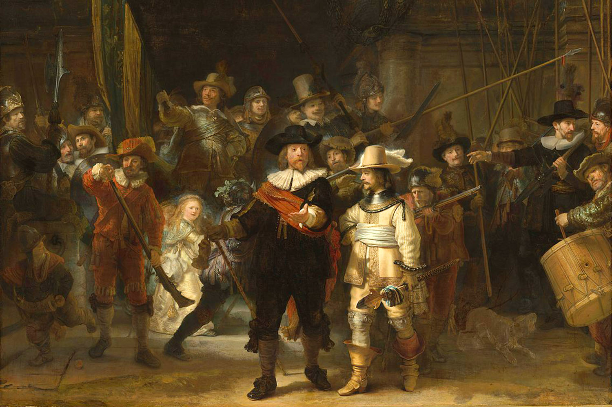
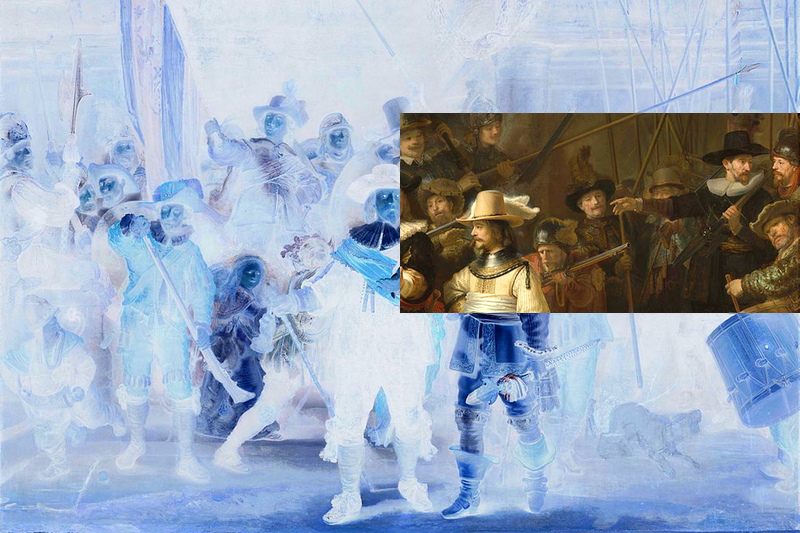

Input Size:
magick identify -ping -format '%w %h' nightwatch.jpg
1500 x 1000
| Value | x/width | y/height |
| Input Size (px) | 1500 | 1000 |
| Output Size (px) | 400 | 200 |
| Focalpoint (factor) | 0.75 | 0.4 |
| Focalpoint Nearest (factor) | 0.25 | 0.4 |
| Scaling (factor) | 0.533333 | 0.25 |
| Scaling Max (factor) | 0.533333 | 0.533333 |
| IM Offset top/left (px) | 400 | 113 |
| CSS Offset (px) | 350 | 233 |
| CSS Offset before scaling (px) | -750 | -346 |
| CSS Offset after scaling (px) | -1406 | -649 |

Imagemagick Hardcrop
magick nightwatch.jpg 53.3333% -crop 400x200+400+113 nightwatch.out.png
CSS Softcrop per Matrix
transform: matrix(0.533333, 0, 0, 0.533333, -750, -346);
CSS Softcrop in Reihenfolge translate/scale
transform: translate(-750px, -346px) scale(0.533333, 0.533333);
CSS Softcrop in Reihenfolge scale/translate
transform: scale(0.533333, 0.533333) translate(-1406px, -649px);